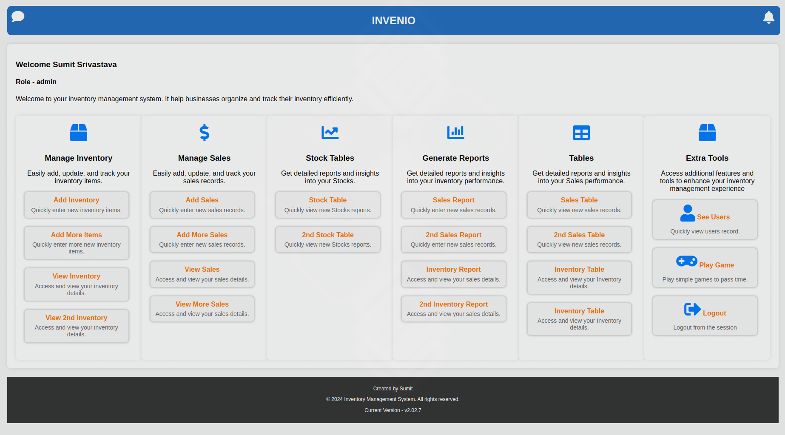

Overview
Invenio is a comprehensive web-based inventory and sales management system designed to streamline operations and drive growth for businesses across various industries. It integrates powerful tools for inventory tracking, sales management, reporting, and mobile app accessibility, empowering businesses to make informed decisions and enhance operational efficiency.
Purpose
The primary purpose of Invenio is to provide businesses with a unified platform that simplifies complex inventory and sales management processes. By offering intuitive tools for tracking stock levels, managing sales, visualizing data, and generating comprehensive reports, Invenio aims to optimize resource allocation, improve operational efficiency, and foster strategic growth.
Features
- Inventory Management: Real-time tracking, alerts, batch management, and barcode scanning.
- Sales Management: Transaction recording, sales analytics, CRM integration, and multi-channel sales support.
- Reporting and Analytics: Customizable reports, data visualization, and forecasting tools.
- User Management and Security: Role-based access control, audit trail, and data security measures.
- Mobile and Web Integration: Mobile app for on-the-go management and responsive web application for desktop and mobile devices.
Technologies Used
- Front-End: HTML5, CSS3, JavaScript (ES6+), React.js
- Back-End: Node.js, Express.js, MongoDB, MySql
- Additional Tools: Redux, Chart.js, Docker
Images
Dashboard overview providing a snapshot of key metrics such as inventory levels, sales performance, and top-selling items.
Sales analysis showcasing daily sales performance and Items .
Development Process
Invenio underwent a meticulous development process to ensure robustness, usability, and scalability:
- Planning and Requirements Analysis: Defined functional requirements and user workflows based on user needs and business goals.
- Design and Prototyping: Created wireframes and prototypes for UI/UX design refinement to ensure user experience and usability of the system.
- Implementation and Testing: Developed front-end and back-end components with comprehensive testing and integration with databases and APIs.
- Deployment and Optimization: Deployed on cloud infrastructure for scalability and performance tuning which ensured seamless performance and scalability.
- Documentation and Support: Comprehensive documentation and ongoing support to ensure user adoption and long-term success of the system.
- Security and Compliance: Implemented robust security measures to protect sensitive data and ensure compliance with industry standards.
- Continuous Improvement: Ongoing updates and feature enhancements to ensure the system continues to remains relevant and meets evolving business needs.
- User Interface and Experience: Designed a user-friendly interface for intuitive navigation and easy data access.
Usage Scenarios
Businesses across various industries can leverage Invenio for:
- Retail Operations: Inventory management across multiple locations, real-time sales tracking, and demand forecasting.
- Manufacturing and Distribution: Supply chain optimization, raw material tracking, and production scheduling.
- E-commerce Platforms: Order fulfillment automation, inventory synchronization, and customer relationship management.
- Service Providers: Consumable inventory management, service contract tracking, and billing integration.
Benefits
Invenio offers several key benefits:
- Operational Efficiency: Automate tasks, minimize errors, and optimize resource utilization.
- Strategic Decision-making: Gain insights into sales trends, inventory performance, and customer behavior.
- Scalability and Flexibility: Modular architecture and cloud-based deployment for seamless scalability.
Impact
Invenio has made a significant impact by:
- Enhancing Operational Agility: Real-time data access and predictive analytics for rapid response.
- Improving Customer Satisfaction: Personalized experiences and efficient service delivery.
- Driving Cost Savings: Optimal inventory management and reduced operational costs.
Explore Invenio
Experience the capabilities of Invenio:
Contact Us
For inquiries, feedback, or to discuss your business needs, please contact us.
Conclusion
Invenio is your strategic partner in transforming inventory and sales management. Whether you're a startup or an established enterprise, Invenio empowers you to optimize operations, enhance productivity, and achieve sustainable growth. Embrace the future of business management with Invenio and unlock new opportunities for innovation and success in your industry.